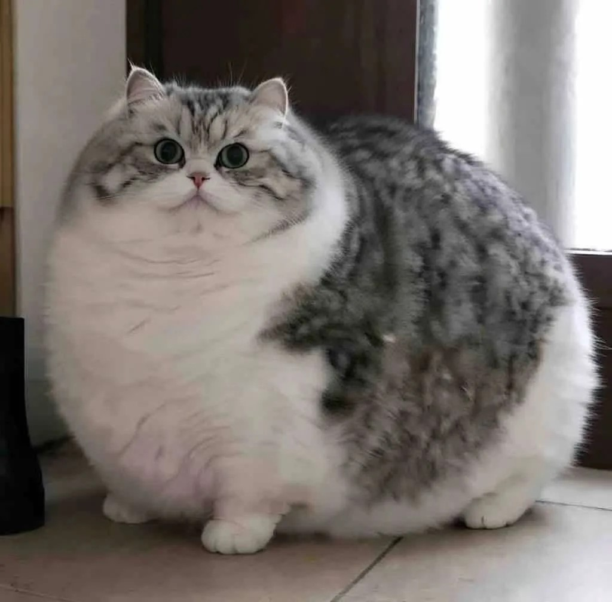

Плюшевая, спокойная.
Характер: сдержанный, независимый, «аристократичный». Ценят личное пространство, не навязчивы, но при этом умны и ласковы. Спокойно переносят одиночество, но не любят, когда их долго держат на руках.
Лысый, ласковый.
Характер: крайне общительный, преданный, нуждается в постоянном тактильном контакте. Любит быть в центре внимания, часто следует за хозяином по пятам. Хорошо чувствует настроение человека, поддаётся дрессировке. Плохо переносит одиночество.

Ушки вниз, милая.
Характер: более общительная и привязанная к хозяину, чем британец, но при этом сохраняет независимость. Хорошо ладит с детьми и другими животными, если знакомство прошло гладко.